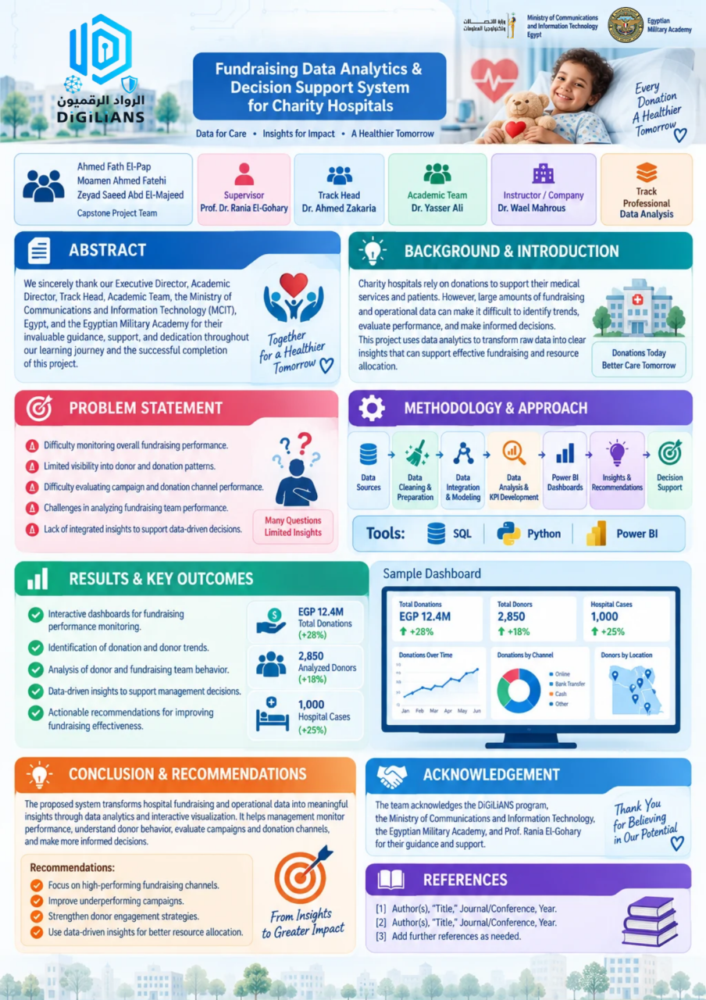

▦
Data Analysis
Exploratory Data Analysis, KPI tracking, business insights, and data storytelling.
Hello, I'm
Professional Data Analyst · Power BI Developer
I turn raw data into clear insights and practical decisions through data cleaning, analysis, and interactive visualizations.
I’m a Data Analyst with a Bachelor’s degree in Information Technology from Minya University. I enjoy transforming complex datasets into meaningful stories that help teams understand performance and make better decisions.
My work combines analytical thinking, structured data preparation, and thoughtful dashboard design. I’m also a graduate of the Professional Data Analysis track within Egypt’s Digital Pioneers Initiative (Digilians).
A practical toolkit for the full analytics workflow.
Exploratory Data Analysis, KPI tracking, business insights, and data storytelling.
Interactive dashboards, data modeling, DAX measures, and reporting.
Querying, cleaning, transforming, and preparing reliable datasets.
Fundraising Data Analytics & Decision Support System for Charity Hospitals

Let’s connect and explore how data can create value.